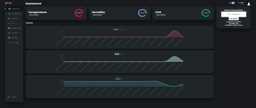

Part 1
Dashboard, User Experience Design
A user-friendly dashboard providing real-time and historical data visualisations. Furthermore, data analytics feature for trend analysis and customised reports.
Part 2
Functional CO2 & Temperature Sensors with Arduino
An Arduino-based sensor system to collect CO2, Temperature, and Humidity data.
Part 3
Alert Mechanism Notifications
Notification system that sends alerts to farmers' Telegram and Email accounts based on predefined threshold conditions.
Part 4
Cloud Integration for Remote Data Access & Management
A database schema with backend to store and manage the collected sensor data remotely.